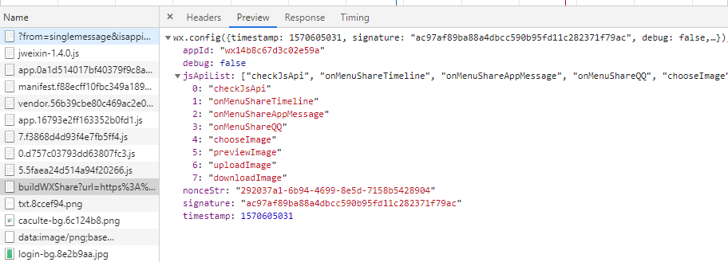

前置：获取公众号开发信息
开发者ID（AppID）： XXX
开发者密码（AppSecret）： XXX
第一步：白名单配置
路径：设置 → 安全中心→ IP白名单
对应分享域名的ip，以及底层通过域名请求后转发到其他服务器的ip，都需要配置白名单
例如：ins-ai-m.fubanktech.com（ip：118.178.152.189），在获取jsapi_ticket签名时，底层调用ip为114.215.170.121服务器，所以该ip也需要进行白名单设置。
第二步：获取jsapi_ticket
参考以下文档获取access_token（有效期7200秒，开发者必须在自己的服务全局缓存access_token）：
https://developers.weixin.qq.com/doc/offiaccount/Basic_Information/Get_access_token.html用第一步拿到的access_token 采用http GET方式请求获得jsapi_ticket（有效期7200秒，开发者必须在自己的服务全局缓存jsapi_ticket）：
https://api.weixin.qq.com/cgi-bin/ticket/getticket?access_token=ACCESS_TOKEN&type=jsapi
（ps:具体步骤可查看官方文档：https://developers.weixin.qq.com/doc/offiaccount/OA_Web_Apps/JS-SDK.html#4）
第三步：结合前端实现签名算法并返回前端wx.config配置
前端提供需要分享的url
1
2
3let url = window.location.href;
let wxUrl = url;
wxUrl = wxUrl.replace(/\?.*#/ig, '#'); //去除路径所携带的所有参数后端通过前端提供的url实现签名生成：（具体参考上面官方文档）
- 成功后返回wx.config()内容：

第四步：js安全域名配置
路径：设置 → 公众号设置 → 功能设置 → js接口安全域名
首先，下载MP_verify_xxxxx.txt文件上传至填写域名或路径指向的web服务器（或虚拟主机）的目录。
由于我们使用nginx就行代理配置：/ (斜杠) 通常 alias 到前端项目目录文件下的 dist 文件夹，所以将txt文件放置到指定web服务器上存在两种方式：
- 直接将txt文件拷贝到对应的前端项目dist目录下（ps：当前端项目发版时，有可能存在覆盖会删除掉）；
- 使用nginx配置：
1
2
3
4
5
6server {
...
location ~*.txt {
index MP_verify_xxxxx.txt; # 对应的txt文件
}
}
从而实现将txt文件放置在nginx代理的对应的服务器目录下，这样就不局限于前端代码的版本迭代。